인간과 기계 사이의 상호작용을 더욱 쉽게 하기 위한 시스템. ↑
기계와 인간의 접합부 (기계공학, 전자공학), 물질의 개면 (화학)
휴먼 인터페이스란 인간과 기계의 접합부.
(최근 휴면 인터페이스를 단순히 인터페이스라고 부르는 경우가 많다.)
인간이 쓰는 기계의 정보화가 진행되면서, 기능이 복잡해지며 쓰기 어렵게 되었다.
가전제품: VTR (예약 녹화장치), 컴퓨터 (일본어 입력기)
대규모 플랜트: 원자력, 화학공장 (시스템 자체가 너무 복잡해져서 알기 어려움)
인간의 모델 (공학시스템에 접하는 인간의 행동을 기술한 것) 을 기초로 한 시스템을 구축.
물건의 학문 vs 사람의 학문
총론: 역사적 배경 (인간과 기계의 관계 변화)
공학 시스템에 있어서의 인간특성: 4가지 관점에서 인간을 모델화
인터랙션을 실현하는 시스템기술: 입력 시스템과 출력 시스템
휴먼 인터페이스의 평가방법: 휴먼 인터페이스의 좋고 나쁨을 어떻게 판단하는가.
복합 시스템이란 이질적인 여러 요소를 합쳐 기능하는 시스템. 인간과 기계는 매우 이질적. (물건의 학문 vs 사람의 학문) 사람이 무엇과 인터페이스 하냐에 따라 시스템의 실현방법이 다르다.
T형 인간
세로: 어떤 분야의 전문지식
가로: 디른 전문분야의 시람과 같이 일할 때 필요판 전문 용어
π형 인간
휴먼 인터페이스라는 학문 분야가 다른 공학과 가장 다른 점을 기술하라.
원자력 발전소 사고를 막기 위해 휴먼 인터페이스라는 학문이 해야할 일은 무엇인가.
산업혁명 이전: 도구의 시대, 기계의 행위와 인간의 행위의 일대일 대응 (지레, 농기구)
산헙혁명 이후 (18~20세기): 에너지 변환형의 기계가 등장. 인간은 기계에 가하는 에너지량의 조절 (자동차)
현대 이후: 정보기계의 등장. 정보의 입출력이 인간의 일. 변화를 가하고 싶은 대상이 눈에 보이지 않게됨.
19세기
실험심리학, 정신물리학 > 감각 기억에 관한 실험적 연구
감각척도: 자극에 대한 감각을 정량화
베버-페히너의 법칙: 감각량은 자극강도의 대수에 비례.
$$ ψ(I)=kI^a $$
20세기 초
인간공학의 탄생: 초기의 인간공학
테일러즘: 노동에 있어 작업연구를 행함. 스탑워치로 작업시간을 측정, 손의 움직임을 최소화해, 생산성의 향상을 지향. (자판 배치 등)
인간공학은 유럽에서 다른 진화를 낳았다.
반면 미국에서는 군에 의해
20세기 중반 (1948~1970)
20세기 후반 (1980s)
컴퓨터 등장 이후의 휴먼인터페이스
버니바 부시 (1945): Memex (Memory Extender) 최초의 휴먼 인터페이스 묘사
더글라스 엥겔바트 (1968): NLS (oN-Line System) 의 데모. GUI의 제안. 최초의 마우스.
이반 서덜랜드 (1963) CG의 아버지. 스케치패드 라이트펜을 이용해 화면에 직접 그림을 그림. 최초의 HMD (1968) 제안. (거울 이용, VR의 원형)
앨런 케이 (1970): NLS의 데모를 보고 개인용 컴퓨터 「다이나북」 을 구상. (1973) 제록스의 팔로알토 연구소에서, 당시 구현 가능한 기술을 이용, 최초의 PC 「Alto」를 제작. (비트맵 디스플레이, 아이콘과 마우스의 현대적 GUI)
MIT 미디어 랩 (1984): 미디어룸. 음성과 제스쳐 지시. (Put That There)
산업혁명 이전과 비교해, 현대의 기계와 인간의 관계중 가장 다른 점을, 예를 들어 그림과 같이 설명하라.
컴퓨터와 인간의 인터페이스는, 태블릿으로 대표되는거같이 직시적인 조작이 가능하도록 설계되어왔다. 이것이 필요한 이유를, 사람과 기계의 관계의 역사와 연관지어 설명하라.
HMD의 원리를 그림를 이용해 설명하고, 웨어러블 장치로서 이용할 경우의 이점에 대해 설명하라.
인체의 형상과 운동에 관해 ↑
인체측정: 표준측정 (直立立位、直立座位) 에 있어서 각 부위의 길이 (寸法)
Martin식 인체측정법: 인체 각 부위의 직선거리, 体表에 따른 길이, 이동 가능 각도 측정
각도기를 각 관절에 착용, 비디오를 촬영해 관절 위치를 계측
제품설계에 사용: 의자, 책상, 옷, 자동차, 公共空間 (엘리베이터) 등
기존의 인간공학에서 사용


Martin식 신체측정법은 점과 선을 계측, 신체에 관한 충분한 정보가 없다. > 인체를 3차원 형상으로 계측할 필요가 있다.

액티브 스트레오법: 광원과 빚센서의 조합으로 삼각측정을 한다.

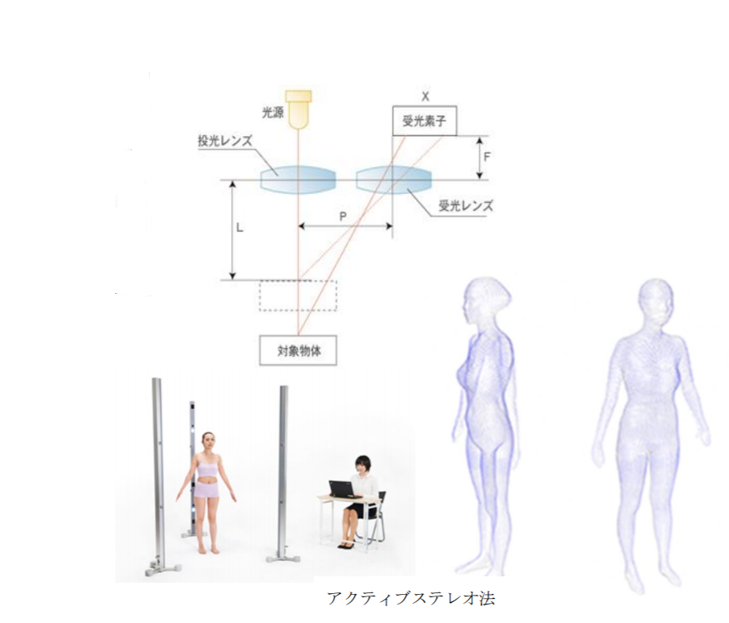
기계식 위치센서: 링크 기구의 관절각도를 측정해 좌표변환에 의해 위치 자세를 알아낸다 (고니오 미터)

장점: 샘플링 레이트, 정밀도가 높다
단점: 탈착이 복잡하고, 링크가 몸을 구속한다.
자기식 위치센서: 발산기에서 나온 자계에 의해 수신기의 코일에 유도전류가 흐른다

장점: 수신기가 소형
단점: 자기 노이즈에 약함 (철 근방에서 오작동)
광학식 위치센서: 몸에 착용한 마커를 복수의 카메라로 촬영해 삼각측량의 원리로 위치를 알아낸다
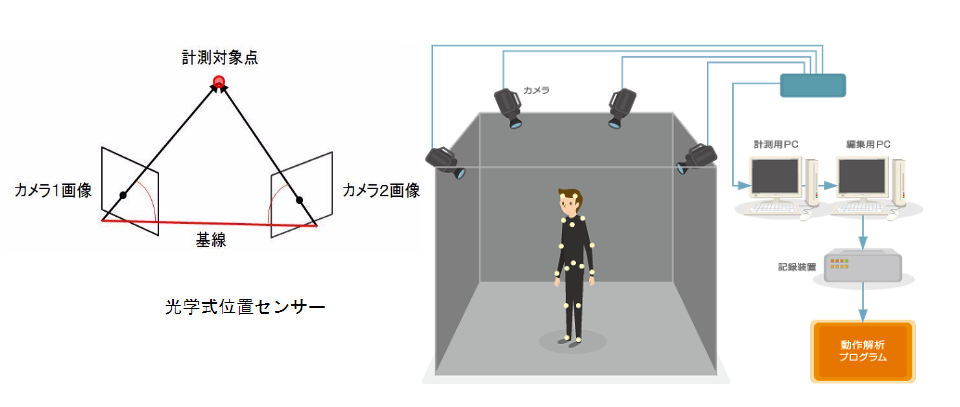
장점: 정밀도가 높고 샘플링이 빠르다
단점: 마커가 카메라에 포착되지 않으면 계측 불가능 > 다수의 카메라를 이용
가속도센서와 자이로스코프: 가속도를 2회 적분해 위치를 구한다. 자이로스코프로 각도를 구함.
장점: 장치가 작고 외부장치가 필요 없다.
단점: 오차가 축적됨으로 정확한 측정이 불가능
계측으로 얻은 데이터는 体表점좌표의 집합. 이것을 기품의 설계에 이용 가능한 모델로 만든다.

쌍 3차 스프라인 함수로 곡면을 기술한다. 이 모델을 기준으로 신체에 맞는 기품 혹은 의복을 만든다.
관절의 움직이는 방법 (운동영역) 을 반영한 인체모델
항공기의 콕피트나 자동차의 운전석
펜실베니아 대학의 Jack 프로그램이 시판중

형태는 정밀히 표현할 수 없으나 유저의 형태에 맞춰 사이즈가 변한다.
좋은 위치에서 작업이 가능한지 알 수 있다.
Martin식 인체측정법과 액티브스트레오법으로 얻어지는 데이터의 차이점에 대하여 기술하라
액티브 스트레오법으로 얻어진 데이터를 제품제작에 응용하는 방법을, 예를 들어 설명하라
광학식 위치 센서로 인체의 움직임을 계측하는 원리를 약도를 이용해 설명하라
생리지표와 인간의 감각에 대해 ↑

인간의 내부상태를 측정. 눈에 보이지 않는 상태변화를 알 수 있다.
스트레서에 의해 다양한 생리 반응이 일어나는데 그것을 센서로 측정하는것

심장을 포함하는 위치에 전극을 붙여 전위차를 측정. 안정적으로 측정 할 수 있어서 생체 전기신호중 가장 많이 사용됨.
R-R 간격에 주목: 분산치가 스트레서와 관련. 분산이 적을수록 긴장 상태. 집중도 등 관측에 사용.
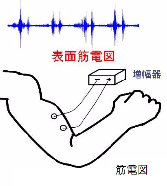
착목하는 근육에 전극을 붙여 전위차를 측정
근전도의 Envelope (포각선) 면적을 구한다. 근육의 활동이 활발할수록 면적이 크다.
작업시의 육체적 부담을 정량적으로 알 수 있다.

눈의 상하좌우에 전극을 붙인다
안구의 망막은 각막에 비해 음전위를 띄고 있어 안구의 움직임에 따라 전위차가 생김
안구운동은 휴먼 인터페이스에 있어 중요
실제로는 비접촉으로 측정 가능한 화상/적외선을 사용

뇌의 활동이 두피의 전위로서 나타난다.
전극의 붚이는법이 정해져있다: 국제 10-20법: 21개의 전극
주파수에 따라 분류가 가능하다.
α파: 8~12Hz 눈을 감으면 후두부에 나타난다. 낮은 각성도나 개안시에도 나타난다. 쾌적성의 척도
β파: 12~25Hz 정신활동과 관련이 있다고 전해져있으나, 진폭이 작아 측정하기 어렵다.
θ파: 4~7Hz 정신적 작업을 부담했을때 생긴다. 정중선위 나타나는 θ파는 집중도와 관련이 깊다.
뇌파는 노이즈에 약하다
외부로부터의 자극에 대해 발생하는 두피의 전위 변화를 측정.
변화가 매우 적기 떄문에 자극을 반복해 평균치를 얻음.
뇌의 고도의 기능을 이용하는것은 事象関連電位 라고 불림

P300: 자극 (트리거) 에 흥미가 나타날경우 300ms 전후로 변화가 발생
BMI (Brain Machine Interface) 에 사용됨
행동을 하기 직전에 두피의 전위가 변화함
패턴을 분석하는것에 의해 그 사람이 무엇을 하고자 하는지 판별 가능.
몸을 움직이지 않고 스위치를 누를 수 있음.

집중, 긴장하면 모세혈관이 수축해 안면 피부의 혈류양이 감소, 온도가 내려간다.
피부온도가 サーモグラフィ (thermography) 로 비접촉 관측 가능
생체전기신호 이외에 뇌의 움직임을 직접 관측하는 센서가 실용화 되어있다.
MEG: 신경의 전기적 신호 활동에 의해 발생하는 미소한 자기를 초전도양자간섭계 (SQUID) 등을 이용해 계측. 자기 실드가 적용된 방 이외 이용 불가능
PET: 체내에 방사성 동위원소를 주입해 뇌내의 대사량이나 혈류양을 측정

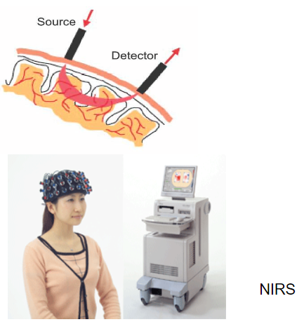
책상 위에서 기계부품의 조립을 하는 작업자에 대해 다음의 내부상태를 계측하기 위해 가장 적절한 생리지표를 고르고, 그 계측방법을 약도를 이용해 설명하라.
이 작업자의 팔에 걸리는 부담
이 작업을 행하는 사람의 집중도
이 작업자의 뇌의 활동상태
특수감각: 특화된 감각기관이 존재 (시각, 청각, 前庭 (균형) 감각, 후각, 미각)
体性감각: 전신에 감각수용기가 분포
피부감각: 触圧감, 온감, 냉감, 통각
심부감각: 위치감, 운동감, 심부 압감, 심부 통감
내장감각: 위장에서 발생. 복통, 메스꺼움 등 ↑


시세포
錐体세포: 밝은곳에서 작동, 색의 식별
桿体세포: 약한 빛의 검출
안구미동: 눈은 항상 움직이고 있다
サッケード (saccade): 보고싶은것으로 빠르게 시점을 이동하는 기능
주변의 밝기 변화에 따라 錐体세포에서 桿体세포로 기능이 전환되는데 시간이 걸린다
명순응: 어두운곳에서 밝은곳으로 갈때 (桿体 > 錐体)
암순응: 밝은곳에서 어두운곳으로 갈떄 (錐体 > 桿体)
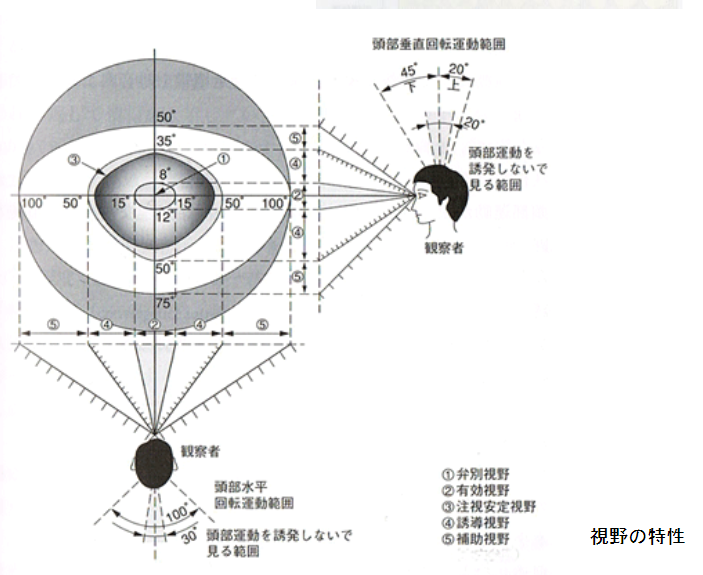
유효시야: 상세를 알 수 있는 최대 시야
보조시야: 볼 수 있는 최대의 범위
영상이 이 범위보다 넓으면 시각 유도성 自己운동이 발생
자신이 영상중에 들어있다는 몰입감을 느낌
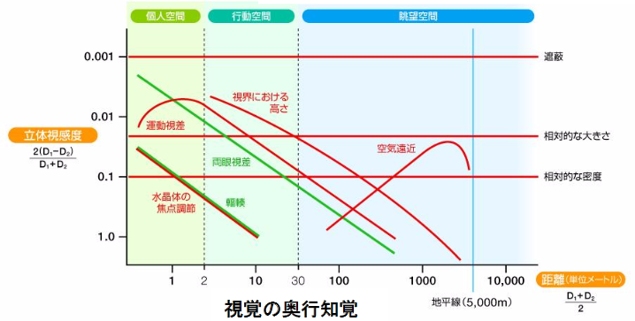
양안시차: 좌우의 망막에 비치는 상이 달라 거리를 알 수 있다. 거리감각의 가장 강한 단서.
輻輳: 가까운 물체를 볼때는 양안이 가운데로 몰린다
조절: 보는 물체의 거리에 따라 수정체의 두께가 변화
운동시차: 가까운것을 볼때는 빠르게 움직이고, 먼것을 볼때는 천천히 움직이는거처럼 보인다. 가까운것은 몸을 직접 움직이면 원근감을 더 자세히 알 수 있다.

소리의 전달: 고막의 진동 > 이소골 > 달팽이관 > 신경
귓바퀴는 소리가 오는 방향, 세반고리관은 가속도를 알기위해 있음

等ラウドネス커브: 같은 강한 음으로 들리는 음압 레벨을 묶은 곡선
청감 임계치: 인간이 들을 수 있는 최소의 음압 레벨
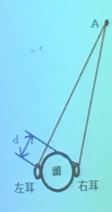
좌우방향: 음원으로부터 귀까지 도달하는 거리가 다르다. 이 차이에 의해 음압과 위상이 좌우가 달라, 방향의 판별이 가능
상하방향: 귓바퀴를 통과할때 주파수가 변조된다. 그 변과의 도합으로 판별 「두부전달함수」 (HRTF)
귀에는 음원의 거리를 지각하는 능력이 없다. 벽이나 바닥에 반사되어 귀에 도달하는 소리는, 음원으로부터 직접 도달하는 소리와 파형이 다르기 떄문에, 판별의 단서가 된다.
자동차가 가솔할때, 운전자가 받는 감각자극중, 주요한것을 열거하고, 각각 어떠한 감각이 발생하는가 설명하라.
10m 떨어져있는 갓발까지의 거리를 시각으로 판별할 때, 가장 유력한 단서를 약도와 같이 설명하라. 또한 같은 위치에 스피커가 있을 때, 그곳까지의 거리를 청각만으로 판별 할 수 있는 단서에 대해 설명해라.
심리적 특성은 센서로 직접 판별 불가능.
대화를 통해 직접 측정한다. 측정밥법 또한 모델 또는 가설을 전제로 한다.
3가지 영역이 존재: 인지 내용 영역, 인지 과도 영역, 인지 방략 영역 ↑
장기기억으로 축적된 지식. 기계나 그 조작방법에 대해, 유저가 어떤 지식을 가지고 있는가.
再認法: 일단 기억한것을 얼마나 오래동안 기억하나 확인함. 자극용 리스트와 再認法용 리스트의 조합으로, 再認率를 측정.
언어적 지식: 사물의 개념, 성질, 에피소드와 관한 기억
비언어적 지식: 영상, 음악 등 감각적인 기억, 再認率가 높다.
가산요인법
단순반응: 스위치에 불이 들어오면 누른다
자극분류: 스위치가 2개 존재
선택응답: A 스위치는 불이 들어오면 누르고, B 스위치는 누르지 않는다.
피험자와 실험자가 조를 짜 같이 작업한다. 発話를 기록분석한다.
문제해결 도중에 생각한것을 말로 표현한다. (Think Aloud) 질문을 잘 하지 않으면, 피험자의 생각을 알기 어렵다.
인지 내용과 인지 과정을 컨트롤 하는 관리계가 존재
감각 モダリティ의 차이는 별도의 주의자원 (음악을 들으면서 독서 가능)
중추처리와 반응과정은 별도의 주의자원 (대화중 볼펜을 돌릴 수 있다. 독서하며 대화 불가능)
언어적 정보와 비언어적 정보는 별도의 주의자원 (영화를 보며 자막을 동시에 볼 수 있다)
지성은 논리적, 감성은 비논리적, 주관성이 강하다 주관적인 정보가 인간의 지식활동에 빠질 수 없다
평가법: 피험자에 의한 태도에 대해 척도로 대답하는 방법 대표적으로 SD법 존재 (Semantic Differential Techique)
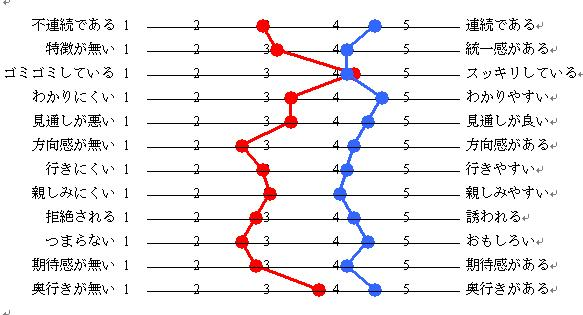
형용사로 표시된 동의/반의어에 대해 5~7단계의 평가를 피험자에게 실시함
주성분 분석을 행해, 경향을 조사한다.
"모델 휴먼 프로세서" S.K.Card
인간을 컴퓨터의 프로세서와 메모리로 비유해 응답시간 분석의 결과를 조절해 인터랙션의 설계에 사용하게 함
정보가 제시된 후로부터 인간이 행동을 종료하기까지 얼마나 시간이 걸리나 예측
문자를 베이스로 한 모델이 있기 떄문에, 인터럭션 설계에 실용화되기엔 부족했다.

지각 프로세서: τp = 100 (50~200) ms
지식 프로세서: τc = 70 (25~700) ms
운동 프로세서: τm = 70 (30~100) ms
이름의 照合 (피험자에게 어떤 이름을 기억시켜, 화면에 기억한 이름이 나오면 스위치를 누르게 시킨다)
화면의 글자를 본다 (τp)
문자를 인식한다 (τc)
장기기억으로의 매칭 (τc)
반응결정 (τc)
스위치를 누른다 (τm)
소요시간: T = τp + 3τc + τm = 380 [ms]
인간과 컴퓨터의 인터페이스는 현대는 GUI지만, 1980년대 이전은 CUI가 주류였다. 양자의 차이점이 인지 내용 영역과 인지 방략 영역에 있어 어떠한 특성을 가지는지 기술하라.
응답시간 분석의 실험방법에 대해 설명하라, 또한 그 知見를 이용해, 컴퓨터 화면상에 소정의 문자열을 발견하는 작업을 최적화하는 방법에 대해 기술하라.
미디어 기술을 이용한 커뮤니케이션 공간, 협력작업 ↑
Verbal 커뮤니케이션
None-Verbal 커뮤니케이션
사회적 특성의 조사를 위해서는 사회적 방법을 도입
휴먼 인터페이스는 시점의 공유가 중요. 「공동주의」 복수 작업자가 같은것을 보는 것.
원격 회의에서는 시선을 일치하는것이 어렵다: 보통 카메라와 디스플레이는 다른 위치에 있다.
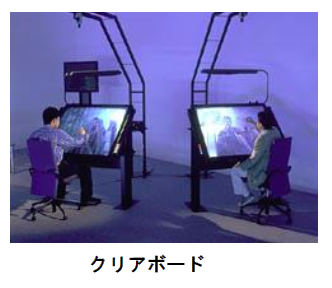
친밀거리: 0.5m (친한 관계와의 대화)
개체거리: 1.2m (타인과의 대화)
사회거리: 3.7m (일반적 회담)
공중거리: 그 이상 (강연회 등)
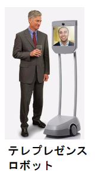
통계데이터를 사용한다.
질문지를 이용해 척도화하는것도 가능하다.
정량적이지만 본질이 보이지않을 때가 많다.
관찰기록나 인터뷰의 결과를 분석한다.
효율이 나쁘고 安生的인 결과만 나오지만 본질을 보는 것이 가능하다.
エスノメソドロシー
エスノグラフィー(참여관찰)
인간과 인간의 커뮤니케이션에 있어, 제스쳐가 하는 역할에 대해 기술하라.
제스쳐를 컴퓨터의 인터페이스로 도입할때, 필요한 센서에 대해 기술하라.
인간이 문제해결을 하는 프로세스를 분석하는 수법에 대해, 혼자 생각할떄와, 5명이 협동할때의 각각 적절한 분석방법에 대해 기술하라.
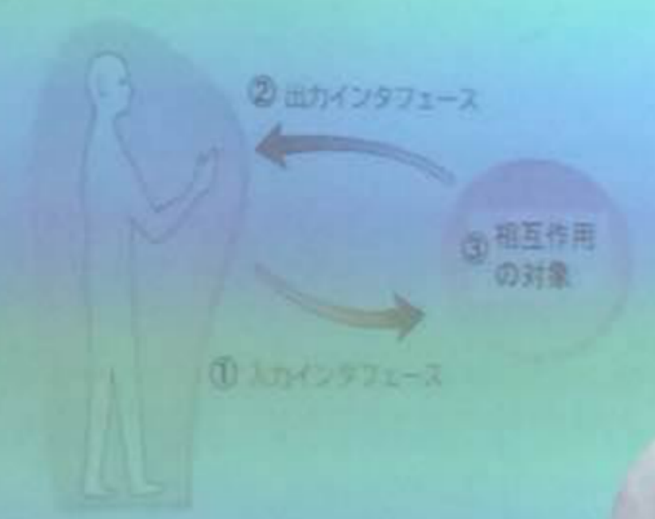
입력인터페이스: 유저의 행동의 센싱
출력인터페이스: 유저의 감각기관에의 정보제시
상호작용의 대상: 컴퓨터 내의 버추얼 세계의 기술. 원격의 실세계의 전송 ↑
하드웨어 센서 - 인간의 상태를 계측 소프트웨어 인식엔진 - 센서의 데이터로부터 인간의 의도를 인식
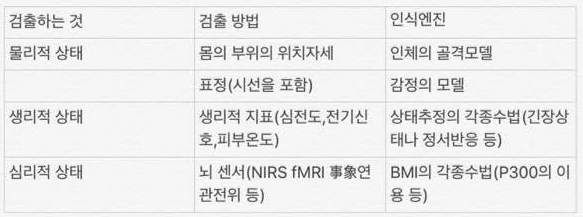
하드웨어 감각디스플레이 - 인간의 감각기관에 합성적인 정보를 전한다. 소프트웨어 디스플레이드라이버 - 감각디스플레이의 디바이스드라이버 렌더러 - 제시데이터의 생성
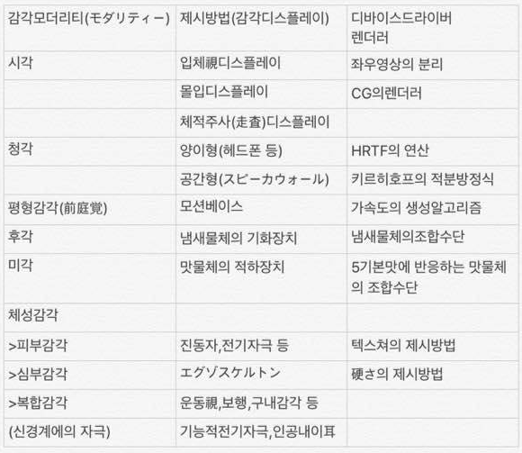
입체시각 방식 ↑
좌우의 눈에 다른 영상을 표시, 양안의 시차를 이용해서 입체시를 구성. 양안에 보이는 영상을 나누는 다양한 방법이 존재.
시분할식: 액정 셔터를 사용. 동기신호를 수신할 필요가 있지만, 품질적으로 우수.
편광식: 편광 필터를 사용. 스크린이 편광에 대응해야만 한다. 저렴하게 안경 제작 가능.
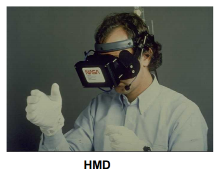
좌우의 눈에 별도의 디스플레이 패널을 이용, 렌즈를 패널 앞에 둬서화면이 멀리 있는것처럼 만든다.
두부의 위치센서와의 조합으로, 머리가 향하고있는쪽으로 영상을 보여주는것을 통해, 높은 융합감을 얻을 수 있다.
장비를 재대로 착용하지 않으면 빛이 새는등 문재가 존재.

안경을 사용하지 않고 입체시를 구현.
입체시가 사용 가능한 위치가 고정, 품질 하락. 실용성이 적다.
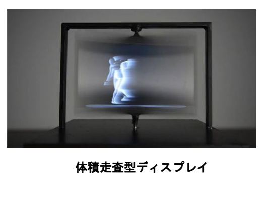
액정 패널을 고속으로 회전시키는 등
대형 스크린으로 시야를 덮는다.
HMD는 시야의 확장에 한계가 존재. (100도 정도) 또한 복수 인원이 동시에 이용 불가능.
몰입 디스플레이는 360도 가능, 여러명 동시 사용 가능.
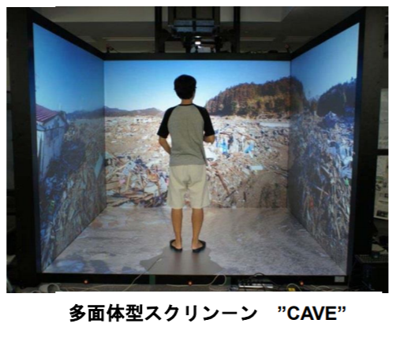
CAVE (다면형 스크린 4면)
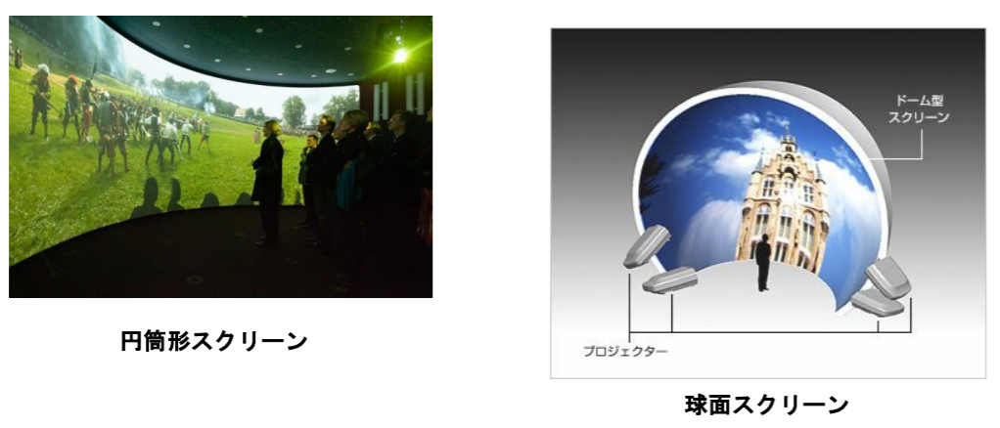
원통형, 구형 스크린으로 시야를 감싼다.
눈과 스크린과의 거리가 일정, 왜곡이 일어나지 않는다. 여러명이서 봐도 자연스러운 영상을 보는것이 가능.
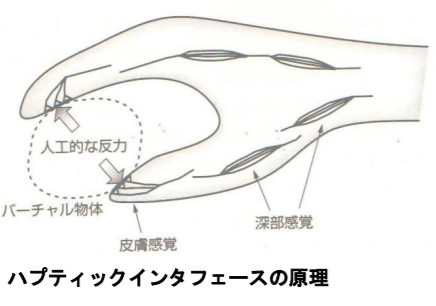
햅틱 인터페이스
触知ピン이라고 불리는 작은 액츄에이터를 격자형으로 깔아 손가락으로 만진다.
시각 장애인용의 オプタコン이라는 제품도 있지만, 지각의 대행은 어렵다.
손가락으로 전기나 공기업으로 자극을 전하는 방법도 연구중
딱딱함이나 무게 등의 반응을 생성한다.
3가지 구현방법이 존재

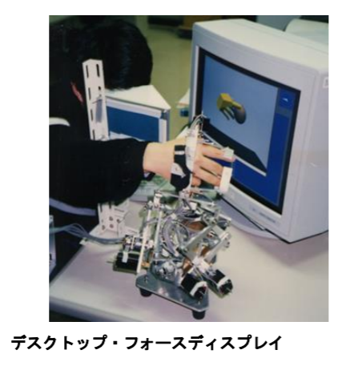

외골격에 액츄에이터를 붙여서 저항력을 가한다
단점: 탈착이 어려움, 잘 장착하지 않으면 성능을 발휘하기 어렵다.
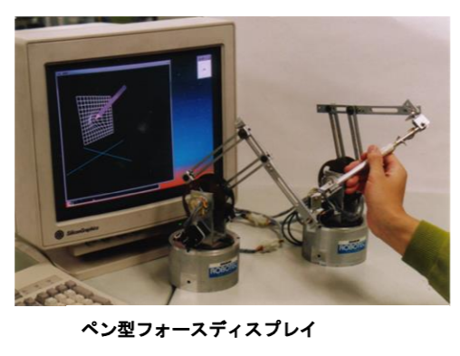
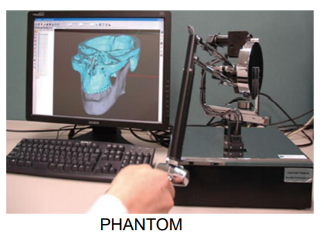
파지부 끝에 액츄에이터를 붙여서 저항감을 만든다. 실현이 가장 쉽고, 의료 및 디자인등의 분야에서 실용화가 진행되고있다.
단점: 물체를 잡는 동작은 구현 불가능, 반력이 간접적 > 자연스러운 느낌은 아니다.
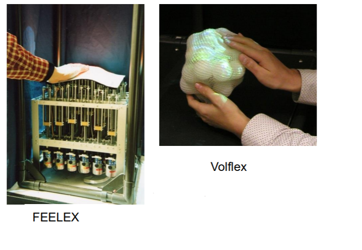
장비 자체의 형태나 딱딱함을 전해준다. 맨손으로 만지기 떄문에 자연스러움.
단점: 실현이 어렵다, 해상도가 낮다
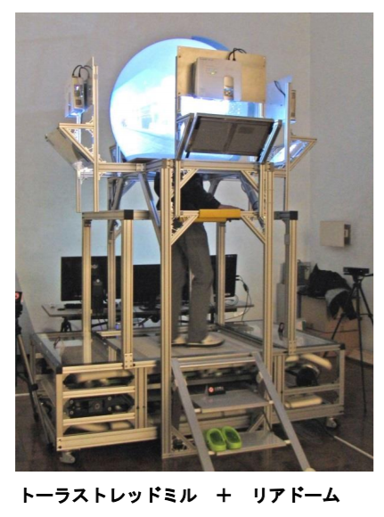
진행: 심부감각 + 시각 + 전정감각
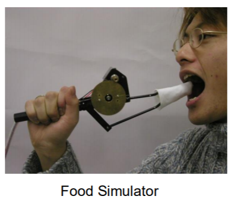
구내감각: 미각 + 심부감각 (구강) + 피부감각 (혀) + 청각 + 후각
심부감각을 가지게 하는 수용기가 존재하는 장소와, 그것에 의해 인간이 무엇을 지각하는가에 대해 설명하라.
손에 발생하는 심부감각을 제시하는 장비중, 가장 실현이 편하고 실용성이 높은것을 약도를 사용해 설명하라.
배가 좌초되는 사고가 일어났다고 할때. 하층의 선실에서 구명정이 있는 상갑판까지 피난하는 상황을 가정하자. 피난 경로를 발견하기 위해서는 주위를 넓게 볼 필요가 있다. 이러한 피난 행동을 유사 체험하는 시스템에서 시각 정보를 제공하는데 적절한 장치에 대해 약도와 같이 설명하라.
휴먼인터페이스의 평가방법 ↑
모델 테스크를 설정해 성적을 측정한다.
완수시간
정확도 (정확도 오차 등)
장점: 정량적인 결과가 나옴
단점: 모델테스크의 설정의 방법에 따라 결과가 나온다. 시스템의 좋음이 성적에 연결되지 않을 때가 많다
질문지: 앙케이트는 가장 간단히 데이터화가 가능하다. 하지만 질문항목의 立て方에 따라 결과가 크게 좌우된다. 해답은 장치의 체험 후에 행하므로 실험중에 무엇을 느꼈는지는 모르는 경우가 많다.
인터뷰: 장치의 체험중의 가상을 듣는 것이 가능하다.
관찰기록: 장치의 체험중의 동작을 기록,분석함으로서 본인이 눈치채지 못한 것도 알 수 있다.
근전도: 근육의 활동을 계측함으로써 장치의 효과를 정량적으로 평가하는 것이 가능하다.
심전도: 긴장상태나 집중도를 알 수 있다.
뇌 센서: NIRS를 사용하면 장치의 체험중에 뇌의 어느 부위가 활동하고 있는 지를 알 수 있다.